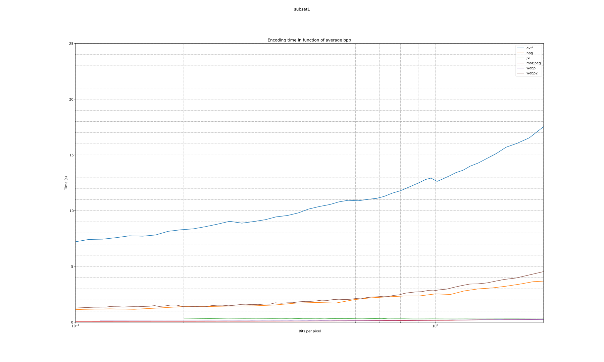

| codec | avg_bpp | avg_compression_ratio | avg_space_saving | wavg_encode_time | wavg_decode_time | weissman_score |
|---|---|---|---|---|---|---|
| jxl | 6.317 | 2.566 | 0.6102 | 20.764 | 3.8462 | 2.0517 |
| webp | 7.630 | 2.124 | 0.5292 | 57.190 | 2.9674 | 1.5415 |
| webp2 | 7.339 | 2.208 | 0.5471 | 96.477 | 5.8577 | 1.5296 |
| avif | 8.968 | 1.807 | 0.4466 | 152.072 | 0.8917 | 1.2040 |
| mozjpeg | 14.224 | 1.139 | 0.1223 | 8.584 | 0.4867 | 1.0000 |
| bpg | 14.107 | 1.149 | 0.1295 | 18.193 | 4.3567 | 0.9311 |
